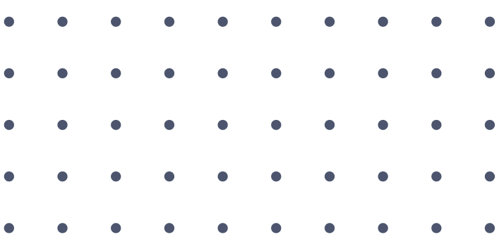
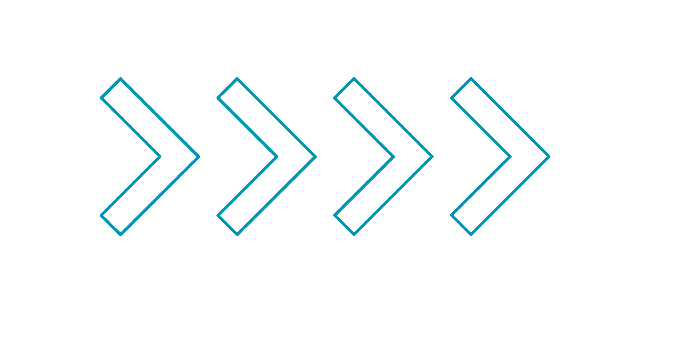

I'MaX
Home
About
Contact
Portflio
อย่าคลิ๊ก
 
Hello
I'm a
มาทำความรู้จักกับ เเม็ค เเละผลงานของเขากัน!
>> Don’t watch the clock, do what it does. Keep going. >> Don’t watch the clock, do what it does. Keep going.
>> Don’t watch the clock, do what it does. Keep going. >> Don’t watch the clock, do what it does. Keep going.